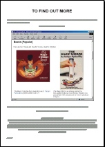
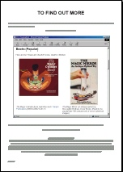

|
[48K] |
[10K] |
|
 [10K] |
[196K] |
[412K] |
 [323K] |
[488K] |
[760K] |
|
[632K] |
[35K] |
[51K] |
|
[142K] |
 [516K] |
There were 13 panels giving an overview of the exhibition. Click on any thumbnail to view the PDF.
|
[48K] |
[10K] |
|
|
[10K] |
[196K] |
[412K] |
|
[323K] |
[488K] |
[760K] |
|
[632K] |
[35K] |
[51K] |
|
[142K] |
 [516K] |
The following books and articles were provided to allow investigation into the art, history and techniques of anamorphosis.
The Magic Cylinder Book, Ivan Moscovich. Tarquin
Publications. (An excellent cheap-and-cheerful book for children.)
The Magic Mirror: an antique optical toy, McLoughlin Brothers.
Dover Books. (Reprint of a popular late-19th century book of mirror-cylindrical
images.)
Secrets des Anamorphoses. Gallimard Jeunesse, Paris, 1995
(ISBN 2-07-058795-9). (In French - an extremely neat package of illustrated booklet,
plastic mirrors and "do-it-yourself" transformation grids.)
See Saw, Hans Knuchel & Jürg Nänni.
Lars Müller Publishers, Basel, 1994.
Hidden Images: Games of perception, anamorphic art, illusion,
F. Leeman, J. Elfers and M. Schuyt. Harry Abrams, New York, 1976.
Eyewitness Guides:
Perspective. Dorling-Kindersley/National Gallery Publications,
1992.
An Introduction to Perspective (DK Art School), Ray Smith.
Dorling-Kindersley, 1995.
What the Painter Sees. Kingfisher, London, 1996.
Perspective, Vredeman de Vries. Dover Books.
Mirrors in Mind, Richard Gregory. W.H. Freeman, New York, 1996.
On Reflection, Jonathan Miller. National Gallery
Publications, London, 1998.
Art and Illusion, Ernst Gombrich. Phaidon Press, Oxford, 1977.
Civilisation, Kenneth Clark. BBC Books/John Murray.
The Ascent of Man, Jacob Bronowski. BBC Books.
"Anamorphic art", Martin Gardner, Scientific American, vol 232, no 1,
pages 110-116, January 1975. (Reprinted in Time Travel and Other
Mathematical Bewilderments, New York: W.H. Freeman, 1988.)
"Anamorphic pictures: Distorted views from which distortion can be
removed", Jearl Walker, Scientific American, vol 245, no 1,
pages 140-147, July 1981.
"Anamorphic images", J.L. Hunt, B.G. Nickel and C. Gigault, American
Journal of Physics, volume 68, part 3, pages 232-237 (March 2000).
Perspective and Other Drawing Systems. Fred Dubery and John
Willats. Van Nostrand Reinhold, New York, 1983.
CHAPTER 1 FROM Perspective in Perspective, Lawrence Wright. Routledge
& Kegan Paul, London, 1983.
CHAPTERS 10 AND 11 FROM Mathematics in Western Culture,
Morris Kline. Penguin Books, 1987.
CHAPTER 2: "ALBRECHT DURER" FROM Geometry and the Liberal Arts, Dan
Pedoe. Penguin Books, 1976.
Anamorphosis, or, De Artificiali Perspectiva - an animated film by the Brothers Quay. 15 minutes. Available at YouTube in two parts: www.youtube.com/watch?v=lNaK-BWoo-s, www.youtube.com/watch?v=4EfSmGSrF3w. (Current commercial availability not known; it has been available in DVD format as The Brothers Quay Collection: Ten Astonishing Short Films 1984-1993.)
On Reflection by Jonathan Miller (VHS tape). A BBC television series which accompanied a 1998 exhibition at the National Gallery in London. See also the book on the Reading Table. 35 minutes.
The Ambassadors: Making and Meaning (VHS tape). National Gallery, London. 30 minutes.
Restoring the Ambassadors (VHS tape). National Gallery, London. 50 minutes.
Three computers had the following installed on them:
One of the computers had a web cam - which could be used to take a picture of yourself, and then put this into Anamorph Me! to make an instant anamorphosis.
The exhibition was made possible with support and technical assistance from the
and with the financial support of:
This web site is developed by Phillip Kent